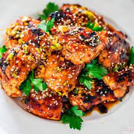

Seasame Grilled Salmon

Description
So let’s talk salmon. Salmon is absolutely one of my favorite kinds of fish. It’s so versatile, so hearty, and so full of protein, vitamin A, and omega fatty acids, which are essential to the proper functioning of the heart and brain. I’m obviously not a salmon ambassador or anything – I just really like it, and when you prepare it with the right ingredients, you’ll have a hearty, healthy dish on your table in no time that your family will love!
Like with this simple ginger marinade here, the salmon soaks up all of the amazing Asian flavors before it gets baked to flaky perfection. And then you finish it off with that sweet honey ginger glaze with a hint of spiciness from the Sriracha because as you know, I have to add Sriracha to everything!
Ingredients
- ¼ cup olive oil
- 2 tablespoons soy sauce
- 2 tablespoons rice vinegar
- 2 tablespoons sesame oil
- 2 tablespoons brown sugar
- 2 cloves garlic, pressed
- 1 tablespoon freshly grated ginger
- 1 tablespoon sesame seeds
- 4 green onions, thinly sliced
- 4 5-ounce salmon filets
Steps
- To make the glaze,whisk together honey,soy sauce,sasame oil,
sriracha,ginger and sesame seeds in small bowl;set aside.
- In a medium bowl, whisk together olive oil, soy sauce, rice vinegar, sesame oil, brown sugar, garlic, ginger, sesame seeds and green onions.
- In a gallon size Ziploc bag or large bowl, combine ginger marinade and salmon filets; marinate for at least 30 minutes to overnight, turning the bag occasionally.
- Preheat oven to 400 degrees F. Lightly coat a 9x13 baking dish with nonstick spray.
- Place salmon filets along with the marinade onto prepared baking dish and bake until the fish flakes easily with a fork, about 20 minutes.
- Serve salmon immediately with honey ginger glaze.